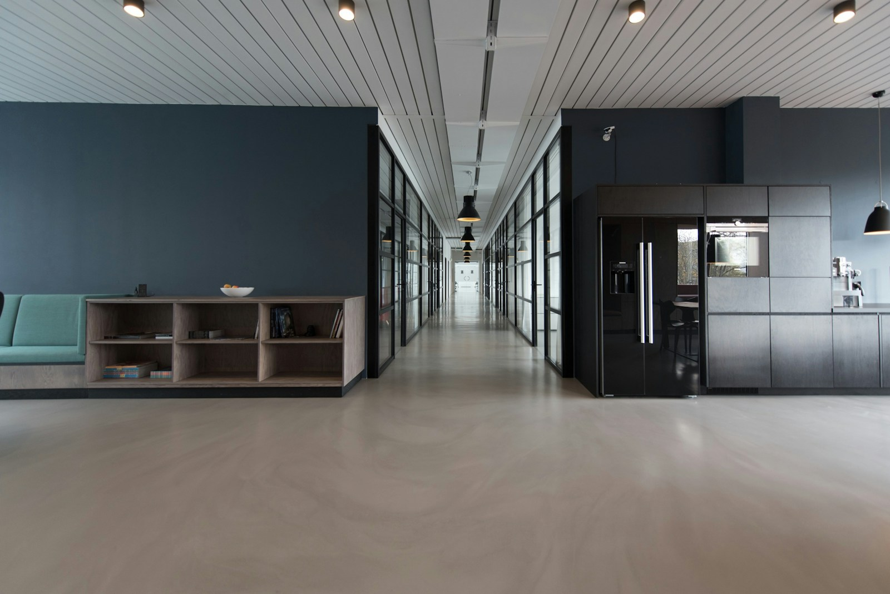

A twelve-year trajectory of disciplined systems engineering.
Founded in Austin in 2013 by distributed systems architects and kernel developers, NovaTech Solutions builds the foundational computing fabric for companies where an hour of downtime translates to millions in lost transactions.

Four values defined as observable behaviors.
Verify before merge. Zero optimistic assumptions.
We reject local developer assertions and optimistic staging tests. Code is verified against synthetic production-scale workloads, high-concurrency race conditions, and automated network partition simulations prior to review sign-off.
Zero Single Points of Failure
Every service boundary assumes individual compute nodes, switches, and whole cloud availability zones will fail without notice. Self-healing state machines govern every tier.
Transparent Observability
We do not ask clients to trust black-box deployments. Every service emits structured JSON telemetry, OpenTelemetry trace spans, and Prometheus metrics out of the box.
100% Clean Code & IP
Every line of code, Terraform script, and architecture documentation is 100% client property from day one. Zero proprietary lock-in frameworks or runtime licensing fees.
Led by engineers who write code and hold on-call keys.
Our leadership team remains hands-on in system architecture, code reviews, and critical production incident drills.
Marcus Vance
18 years designing distributed transaction engines. Former Linux kernel storage contributor and author of the core consensus layer used by Apex Financial.

Elena Rostova
Specialist in zero-trust architecture and cryptographic hardware security modules. Directed 34 successful SOC 2 Type II and ISO 27001 client audits.
David Chen
Expert in Go, Rust, and event-stream processing. Architected the 1.4M msg/sec logistics pipeline for Vanguard and high-throughput data caches.

Sarah Jenkins
Leads our 24/7 SRE rotation. Specializes in multi-region failover automation, chaos drills, and sub-second telemetry collection via OpenTelemetry.
Third-party compliance and platform partnerships.
AWS Advanced Tier
Certified Migration & DevOps Competency
SOC 2 Type II
Annual AICPA Audited Controls
Kubernetes Certified
CKA & CKAD Senior Architects
ISO/IEC 27001
ISMS Validated Security Practice